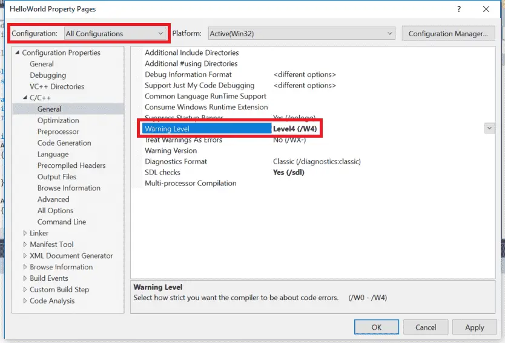
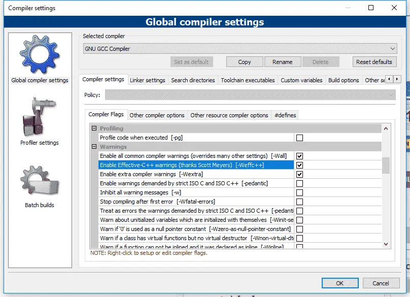
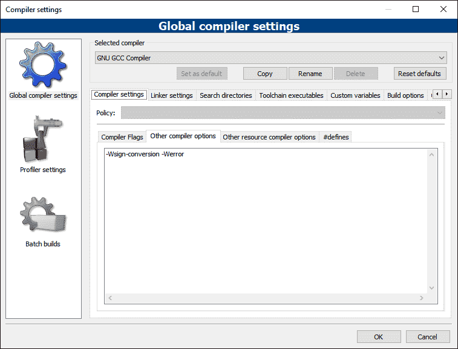
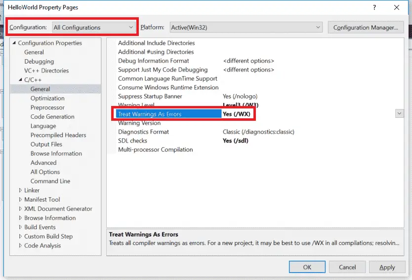

When you write your programs, the compiler will check to ensure you’ve followed the rules of the C++ language (assuming you’ve turned off compiler extensions, as per lesson 0.10 -- Configuring your compiler: Compiler extensions). If you have done something that definitively violates the rules of the language, then your program is ill-formed.
In most cases, when the compiler encounters some kind of issue, it will emit diagnostic message (often called a diagnostic for short). The C++ standard does not define how diagnostic messages should be categorized, worded, or how those issues should affect the compilation of the program. However, modern compilers have conventionally adopted the following:
- A diagnostic error (error for short) means the compiler has decided to halt compilation, because it either cannot proceed or deems the error serious enough to stop. Diagnostic errors generated by the compiler are often called compilation errors, compiler errors, or compile errors.
- A diagnostic warning (warning for short) means the compiler has decided not to halt compilation. In such cases, the issue is simply ignored, and compilation proceeds.
Key insight
Compilers determine whether a non-blocking issue is a warning or an error. While they usually align in their categorization, in some cases, compilers may not agree -- with one compiler emitting an error and another compiler emitting a warning for the same issue.
To help you identify where the issue is, diagnostic messages typically contain both the filename and line number where the compiler found the issue, and some text about what was expected vs what was found. The actual issue may be on that line, or on a preceding line. Once you’ve addressed the issue causing the diagnostic, you can try compiling again to see if the associated diagnostic message is no longer generated.
In some cases, the compiler may identify code that does not violate the rules of the language, but that it believes could be incorrect. In such cases, the compiler may decide to emit a warning as a notice to the programmer that something seems amiss. Such issues can be resolved either by fixing the issue the warning is pointing out, or by rewriting the offending lines of code in such a way that the warning is no longer generated.
For advanced readers
We show an example of a statement that is technically legal but modern compilers find suspicious in lesson 7.7 -- External linkage and variable forward declarations.
In rare cases, it may be necessary to explicitly tell the compiler to not generate a particular warning for the line of code in question. C++ does not support an official way to do this, but many individual compilers (including Visual Studio and GCC) offer solutions (via non-portable #pragma directives) to temporarily disable warnings.
Best practice
Don’t let warnings pile up. Resolve them as you encounter them (as if they were errors). Otherwise a warning about a serious issue may be lost amongst warnings about non-serious issues.
The linker may also generate diagnostic errors if there is an issue that occurs when linking that cannot be resolved.
Increasing your warning levels
By default, most compilers will only generate warnings about the most obvious issues. However, you can request your compiler be more assertive about providing warnings, and it is generally a good idea to do so.
Best practice
Turn your warning levels up, especially while you are learning. The additional diagnostic information may help in identifying programming mistakes that can cause your program to malfunction.
For Visual Studio users
To increase your warning levels, right click on your project name in the Solution Explorer window, then choose Properties:

From the Project dialog, first make sure the Configuration field is set to All Configurations.
Then select C/C++ > General tab and set Warning level to Level4 (/W4):

Note: Do not choose EnableAllWarnings (/Wall) or you will be buried in warnings generated by the C++ standard library.
Visual Studio disables signed/unsigned conversion warnings by default, and those are useful, so if you are using Visual Studio 2019 or newer, let’s enable those:
- From C/C++ > Command Line tab, under Additional Options, add
/w44365. This tells the compiler to enable signed/unsigned conversion warnings at warning level 4 (which you enabled above). - From C/C++ > External Includes tab, set External Header Warning Level to Level3 (/external:W3). This tells the compiler to compile standard library headers at warning level 3 (instead of 4) so that compiling those headers doesn’t trigger this warning.
The “External Includes” tab isn’t shown in the graphic above, but appears in VS Community 2019 or newer between the “Browse Information” and “Advanced” tabs. See this link, which contains a recent photo of the dialog containing the “External Includes” tab.
If the above has been set correctly, compiling the following program should generate warning C4365:
void foo(int)
{
}
int main()
{
unsigned int x { 5 };
foo(x);
return 0;
}If you do not see the warning, check both the Output and Error List tabs (if they exist).
For Code::Blocks users
From Settings menu > Compiler > Compiler settings tab, find and check the options that correlate with -Wall, -Weffc++, and -Wextra:

Then go to the Other compiler options tab, and add -Wconversion -Wsign-conversion to the following text edit area:

Note: The -Werror parameter is explained below.
For gcc users
Add the following flags to your command line: -Wall -Weffc++ -Wextra -Wconversion -Wsign-conversion
For VS Code users
Open the tasks.json file, find “args”, and then locate the line “${file}” within that section.
Above the “${file}” line, add new lines containing the following commands (one per line):
"-Wall", "-Weffc++", "-Wextra", "-Wconversion", "-Wsign-conversion",
Treat warnings as errors
It is also possible to tell your compiler to treat all warnings as if they were errors (in which case, the compiler will halt compilation if it finds any warnings). This is a good way to enforce the recommendation that you should fix all warnings (if you lack self-discipline, which most of us do).
Best practice
Enable “Treat warnings as errors”. This will force you to resolve all issues causing warnings.
For Visual Studio users
To treat warnings as errors, right click on your project name in the Solution Explorer window, then choose Properties:
From the Project dialog, first make sure the Configuration field is set to All Configurations.
Then select C/C++ > General tab and set Treat Warnings As Errors to Yes (/WX).

For Code::Blocks users
From Settings menu > Compiler > Other compiler options tab, add -Werror to the text edit area:
For gcc users
Add the following flag to your command line: -Werror
For VS Code users
In the tasks.json file, add the following flags before “${file}”, one per line:
"-Werror",